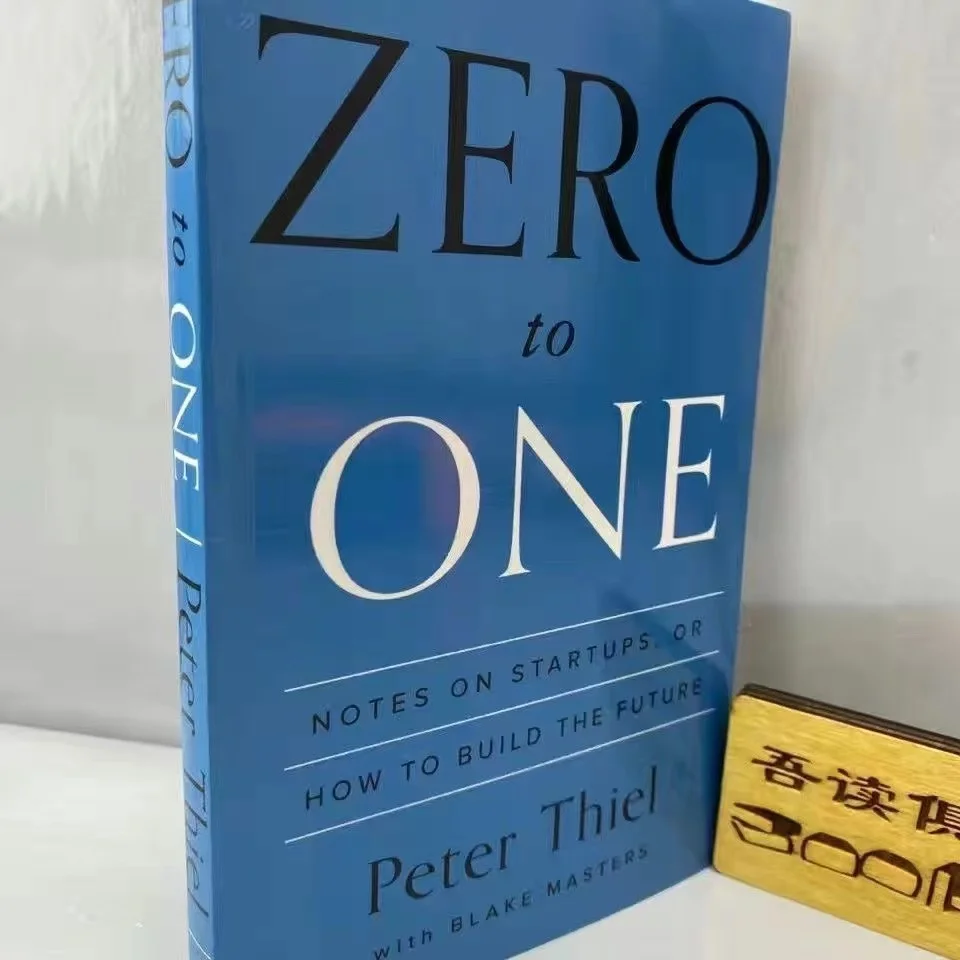

Why Did Curt Schilling Fail?
The Pitcher Who Bet It All on a Video Game
📜 What Happened
Baseball legend Curt Schilling put essentially his entire $50M career earnings into 38 Studios, his fantasy video-game company. No industry experience, one game shipped, massive state loans from Rhode Island — and when the money ran out mid-development of the second game, the company collapsed in weeks, taking his fortune, 400 jobs, and years of lawsuits with it.
☠️ The Fatal Mistake
All-in concentration in a single venture, in an industry he didn't know, with no capital reserve for the inevitable delays.
🧠 The Lesson (Free for You)
Diversification isn't cowardice. Passion for games didn't equal competence at running a studio — fund your dreams with a fraction, never the whole pile.
📕 The Antidote Book

Every moment in business happens only once. The next Bill Gates won't build an operating system; the next Zuckerberg won't build a social network. Copying existing models takes the world from 1 to n — real value comes…
📖 OPEN THE FULL INTERACTIVE BREAKDOWN →Searchable, filterable, free forever — they paid billions; your lesson is free.